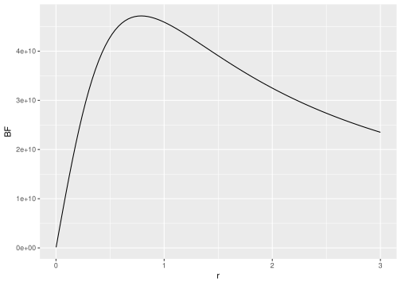

Chapter 9 Bayesian hypothesis testing through Bayes Factors
In this chapter, we will discuss how to compute Bayes Factors for a variety of General Linear Models using the BayesFactor package (Morey and Rouder 2018). The package implements the “default” priors discussed in the SDAM book.
9.1 The BayesFactor package
The BayesFactor package implements Bayesian model comparisons for General Linear Models (as well as some other models for e.g. contingency tables and proportions) using JZS-priors for the parameters, or fixing those parameters to 0. Because Bayes Factors are transitive, in the sense that a ratio of Bayes Factor is itself another Bayes factor:
\[\begin{align}
\text{BF}_{1,2} &= \frac{p(Y_1,\ldots,Y_n|\text{MODEL 1})}{p(Y_1,\ldots,Y_n|\text{MODEL 2})} \\
&= \frac{p(Y_1,\ldots,Y_n|\text{MODEL 1})/p(Y_1,\ldots,Y_n|\text{MODEL 0})} {p(Y_1,\ldots,Y_n|\text{MODEL 2})/p(Y_1,\ldots,Y_n|\text{MODEL 0})} \\
&= \frac{\text{BF}_{1,0}}{\text{BF}_{2,0}}
\end{align}\]
You can compute many other Bayes Factors which might not be provided by the package by simply dividing the Bayes factors that the package does provide. This makes the procedure of model comparison very flexible.
If you haven’t installed the BayesFactor package yet, you need to do so first. Then you can load it as usual by:
9.1.1 A Bayesian one-sample t-test
A Bayesian alternative to a \(t\)-test is provided via the ttestBF function. Similar to the t.test function in the base stats package, this function allows computation of a Bayes factor for a one-sample t-test and independent-samples t-tests (as well as a paired t-test, which we haven’t covered in the course). Let’s re-analyse the data we considered before, concerning participants’ judegments of the height of Mount Everest. The one-sample t-test we computed before, comparing the judgements to an assumed mean of \(\mu = 8848\), was:
# load the data
library(sdamr)
data("anchoring")
# select the subset we analysed in Chapter 3
dat <- subset(anchoring,(referrer == "swps" | referrer == "swpson") & anchor == "low")
# compute the Frequentist one-sample t-test
t.test(dat$everest_meters, mu=8848)##
## One Sample t-test
##
## data: dat$everest_meters
## t = -8.4429, df = 108, p-value = 1.558e-13
## alternative hypothesis: true mean is not equal to 8848
## 95 percent confidence interval:
## 5716.848 6907.537
## sample estimates:
## mean of x
## 6312.193The syntax for the Bayesian alternative is very similar, namely:
This code provides a test of the following models:
\[\begin{align} H_0\!&: \mu = 8848 \\ H_1\!&: \frac{\mu - 8848}{\sigma_\epsilon} \sim \textbf{Cauchy}(r) \end{align}\]
After computing the Bayes factor and storing it in an object bf_anchor, we just see the print-out of the result by typing in the name of the object:
## Bayes factor analysis
## --------------
## [1] Alt., r=0.707 : 46902934208 ±0%
##
## Against denominator:
## Null, mu = 8848
## ---
## Bayes factor type: BFoneSample, JZSThis output is quite sparse, which is by no means a bad thing. It shows a few important things. Under Alt. (which stands for the alternative hypothesis), we first see the scaling factor \(r\) used for the JZS prior distribution on the effect size. We then see the value of the Bayes Factor, which is “extreme”, showing that the alternative hypothesis at 46,902,934,208. Quite clearly, the average judgements differed from the true height of Mount Everest! After the computed value of the Bayes factor, you will find a proportional error estimate on the Bayes factor. In general, the marginal likelihoods that constitute the numerator (“top model”) and denominator (“bottom model”) of the Bayes factor can not be computed exactly, and have to be approximated by numerical integration routines, or simulation. This results in some (hopefully small) error in computation, and the error estimate indicates the extend to which the true Bayes factor might differ from the computed one. In this case, the error is (proportionally) very small, and hence we can be assured that our conclusion is unlikely to be affected by error in the approximation.
As we didn’t set the scaling factor explicitly, the default value is used, which is \(r = \frac{\sqrt{2}}{2} = 0.707\). Note that this is actually different from the default value of \(r=1\) used in Rouder et al. (2009), which first introduced this version of the Bayesian t-test to a psychological audience, and the one used to illustrate the method in the SDAM book. While reducing the default value to \(r=0.707\) is probably reasonable given the effect sizes generally encountered in psychological studies, a change in the default prior highlights the subjective nature of the prior distribution in the Bayesian model comparison procedure. You should also realise that different analyses, such as t-tests, ANOVA, and regression models, use different default values for the scaling factor. As shown in the SDAM book, the value of the Bayes factor depends on the choice for the scaling factor. Although the default value may be deemed reasonable, the choice should really be based on a consideration of the magnitude of the effect sizes you (yes, you!) expect in a particular study. This is not always easy, but you should pick one (the default value, for instance, if you can’t think of a better one) before conducting the analysis. If you feel that makes the test too subjective, you may may want to check the robustness of the result for different choices of the scaling factor. You can do this by computing the Bayes factor for a range of choices of the scaling factor, and then inspecting whether the strength of the evidence is in line with your choice for a reasonable range of values around your choice. The code below provides an example of this:
# create a vector with different values for the scaling factor r
rscale <- seq(.001,3,length=100)
# create an ampty vector to store the resulting Bayes factors
BFs <- vector("double", length=100)
# compute the Bayes factor for each value of r
for(i in 1:100) {
temp_bf <- ttestBF(dat$everest_meters, mu=8848, r = rscale[i])
# the object returned by the ttestBF function is a so-called S4 object
# this has "slots" which can be accessed through the "@" operatpr
# the actual value for the BF is extracted by @bayesFactor$bf
# which is stored in a logarithmic scale, so we need to use "exp"
# to obtain the value of the actual Bayes factor
BFs[i] <- exp(temp_bf@bayesFactor$bf)
}
# use ggplot to plot the values of the Bayes factor against the choice of r
library(ggplot2)
ggplot(data.frame(r=rscale,BF=BFs),aes(x=r,y=BF)) + geom_line()
Given the scale of the \(y\)-axis, there is overwhelming evidence against the null-hypothesis for most choices of the scaling factor. Hence, the results seem rather robust to the exact choice of prior.
9.1.2 A Bayesian two-sample t-test
To compare the means of two groups, we can revisit the Tetris study, where we considered whether the number of memory intrusions is reduced after playing Tetris in combination with memory reactivation, compared to just memory reactivation by itself. The ttestBF function allows us to provide the data for one group as the x argument, and the data for the other group as the y argument, so we can perform our model comparison, by subsetting the dependent variable appropriately, as follows:
data("tetris2015")
bf_tetr <- ttestBF(x=tetris2015$Days_One_to_Seven_Number_of_Intrusions[tetris2015$Condition == "Reactivation"], y = tetris2015$Days_One_to_Seven_Number_of_Intrusions[tetris2015$Condition == "Tetris_Reactivation"])
bf_tetr## Bayes factor analysis
## --------------
## [1] Alt., r=0.707 : 16.78482 ±0%
##
## Against denominator:
## Null, mu1-mu2 = 0
## ---
## Bayes factor type: BFindepSample, JZSWhich shows strong evidence for the alternative hypothesis over the null hypothesis that the means are identical (i.e. that the difference between the means is zero, \(\mu_1 - \mu_2 = 0\)), as the alternative model is 2.82 times more likely than the null model, which sets the difference between the means to exactly \(\mu_1 - \mu_2 = 0\), rather than allowing different values of this difference through the prior distribution.
A two-sample t-test should really be identical to a two-group ANOVA model, as both concern the same General Linear Model (a model with a single contrast-coding predictor, with e.q. values of \(-\tfrac{1}{2}\) and \(\tfrac{1}{2}\)). Before fully discussing the way to perform an ANOVA-type analysis with the BayesFactor package, let’s just double-check this is indeed the case:
dat <- subset(tetris2015, Condition %in% c("Tetris_Reactivation","Reactivation"))
# remove levels of Condition that are no longer needed due to subsetting
dat$Condition <- droplevels(dat$Condition)
#contrasts(dat$Condition) <- c(-1/2,1/2)
bf2_tetr <- anovaBF(Days_One_to_Seven_Number_of_Intrusions ~ Condition, data = dat)
bf2_tetr## Bayes factor analysis
## --------------
## [1] Condition : 16.78482 ±0%
##
## Against denominator:
## Intercept only
## ---
## Bayes factor type: BFlinearModel, JZSThe results are indeed identical. Note that this is because both the ttestBF and anovaBF function use the same prior distribution for the effect.
9.1.3 A Bayesian ANOVA
More general ANOVA-type models can be tested though the anovaBF function. This function takes the following important arguments:
formula: a formula like in thelmfunction, specifying which factors to include as well as their interactions (by e.g. using an*operator to specify you want to include the main effects as well as their interactions. Note that unlike in thelmfunction, all terms must be factors.data: adata.framecontaining data for all factors in the formula.whichRandom: a character vector specifying which factors are random. Random factors can be used to obtain a model similar to a repeated-measures ANOVA, or a (restricted) set of linear-mixed effects models (with only factors for the fixed effects).whichModels: a character vector specifying which models to compare. The allowed values are"all","withmain"(the default),"top", and"bottom". SettingwhichModelsto"all"will test all models that can be created by including or not including a main effect or interaction."top"will test all models that can be created by removing or leaving in a main effect or interaction term from the full model."bottom"creates models by adding single factors or interactions to the null model."withmain"will test all models, with the constraint that if an interaction is included, the corresponding main effects are also included. Setting the argument totopproduces model comparisons similar to the Type 3 procedure, comparing the full model to a restricted model with each effect removed. Setting the argument towithMainproduces model comparisons similar to the Type 2 procedure, with model comparisons that respect the “principle of marginality”, such that tests of the main effects do not consider higher-order interactions, whilst a test of any interaction includes the main effects that constitute the elements in the interactions.rscaleFixed: prior scale for fixed effects. The value can be given numerically, or as one of three strings:"medium"(\(r = \tfrac{1}{2}\)),"wide": \(r = \tfrac{\sqrt{2}}{2}\), or"ultrawide"(\(r=1\)). The default is "medium".rscaleRandom: prior scale for random effects. Accepts the same strings asrscaleFixed, and in addition"nuisance"(\(r = 1\)). The default is"nuisance".rscaleEffects: a named vector with prior scales for individual factors.
The anovaBF function will (as far as I can gather) always use contr.sum() contrasts for the factors. So setting your own contrasts will have no effect on the results. The exact contrast should not really matter for omnibus tests, and sum-to-zero are a reasonable choice in general (contr.sum implements what we called effect-coding before).3 While the anovaBF function always uses the JZS prior for any effects, it allows you to specify exactly which scaling factor to use for every effect, if so desired.
Let’s see what happens when we use a Bayesian ANOVA-type analysis for the data on experimenter beliefs in social priming. First, let’s load the data, and turn the variables reflecting the experimental manipulations into factors:
data("expBelief")
dat <- expBelief
dat$primeCond <- factor(dat$primeCond)
dat$experimenterBelief <- factor(dat$experimenterBelief)We can now use the anofaBF function to compute the Bayes factors:
## Bayes factor analysis
## --------------
## [1] experimenterBelief : 537.3879 ±0%
## [2] primeCond : 0.1282136 ±0%
## [3] experimenterBelief + primeCond : 69.75452 ±0.99%
## [4] experimenterBelief + primeCond + experimenterBelief:primeCond : 15.18165 ±1.41%
##
## Against denominator:
## Intercept only
## ---
## Bayes factor type: BFlinearModel, JZSA main thing to note here is that the comparisons of different versions of MODEL G are against the same MODEL R, which is an intercept-only model. We can see that all models which include experimenterBelief receive strong evidence against the intercept-only model, apart from the model which only includes primeCond, which has less evidence than the intercept-only model. Although this indicates that the primeCond effect might be ignorable, the comparisons are different from comparing reduced models to the general MODEL G with all effects included. We can obtain these Type 3 comparisons by setting the whichModels argument to `“top”``:
bf_expB2 <- anovaBF(ApproachAdvantage ~ primeCond*experimenterBelief, data = dat, whichModels = "top")
bf_expB2## Bayes factor top-down analysis
## --------------
## When effect is omitted from experimenterBelief + primeCond + experimenterBelief:primeCond , BF is...
## [1] Omit experimenterBelief:primeCond : 4.726269 ±3.59%
## [2] Omit primeCond : 8.262924 ±4.69%
## [3] Omit experimenterBelief : 0.001940934 ±3.64%
##
## Against denominator:
## ApproachAdvantage ~ experimenterBelief + primeCond + experimenterBelief:primeCond
## ---
## Bayes factor type: BFlinearModel, JZSIt is very important to realise that the output now concerns the comparison of the reduced model (in the numerator, ie. the “top model”) against the full model (in the denominator, i.e. the “bottom model”), as is stated in the Against denimonator part of the output. That means that low values of the Bayes factor now indicate evidence for the alternative hypothesis that an effect is different from 0. We can change the output in a measure of the alternative model against the null model by inverting the Bayes factor as follows:
## denominator
## numerator experimenterBelief + primeCond
## experimenterBelief + primeCond + experimenterBelief:primeCond 0.2115834
## denominator
## numerator experimenterBelief + experimenterBelief:primeCond
## experimenterBelief + primeCond + experimenterBelief:primeCond 0.1210225
## denominator
## numerator primeCond + experimenterBelief:primeCond
## experimenterBelief + primeCond + experimenterBelief:primeCond 515.2159which now shows strong evidence for the effect of experimenterBelief when we remove it from the full model.
The transitivity of the Bayes factor means that we can also obtain some of these results through a ratio of the Bayes factors obtained earlier. For instance, a Type 3 test of the effect of experimenterBelief:primeCond interaction can be obtained by comparing a model with all effects included to a model without this interaction. In the analysis stored in bf_expB, we compared a number of the possible models to an intercept-only model. By comparing the Bayes factors of the model which excludes the interaction to a model which includes it, we can obtain the same Bayes factor of that interaction as follows. In the output of bf_expB, the fourth element compared the full model to the intercept-only model, whilst in the third element, a model with only the main effects of experimenterBelief and primeCond are compared to an intercept-only model. The Type 3 test of the interaction can then be obtained through the ratio of these two Bayes factors:
## Bayes factor analysis
## --------------
## [1] experimenterBelief + primeCond + experimenterBelief:primeCond : 0.217644 ±1.72%
##
## Against denominator:
## ApproachAdvantage ~ experimenterBelief + primeCond
## ---
## Bayes factor type: BFlinearModel, JZSwhich indicates evidence for the null hypothesis that there is no moderation of the effect of experimenterbelief by primeCond, as the Bayes factor is well below 1. We cannot replicate all Type 3 analyses with the results obtained earlier, unless we ask the function to compare every possible model against the intercept-only model, by specifying whichModels = "all":
bf_expB3 <- anovaBF(ApproachAdvantage ~ primeCond*experimenterBelief, data = dat, whichModels = "all")
bf_expB3## Bayes factor analysis
## --------------
## [1] experimenterBelief : 537.3879 ±0%
## [2] primeCond : 0.1282136 ±0%
## [3] experimenterBelief:primeCond : 0.1613884 ±0%
## [4] experimenterBelief + primeCond : 67.2707 ±2.01%
## [5] experimenterBelief + experimenterBelief:primeCond : 121.471 ±2.62%
## [6] primeCond + experimenterBelief:primeCond : 0.02731733 ±1.78%
## [7] experimenterBelief + primeCond + experimenterBelief:primeCond : 15.09079 ±1.38%
##
## Against denominator:
## Intercept only
## ---
## Bayes factor type: BFlinearModel, JZSFor instance, we can now obtain a Type 3 test for experimenterBelief by comparing the full model (the 7th element in the output) to a model which just excludes this effect (i.e. the 6th element):
## Bayes factor analysis
## --------------
## [1] experimenterBelief + primeCond + experimenterBelief:primeCond : 552.4256 ±2.25%
##
## Against denominator:
## ApproachAdvantage ~ primeCond + experimenterBelief:primeCond
## ---
## Bayes factor type: BFlinearModel, JZSwhich reproduces mostly the result we obtained by setting whichModel = "top" before.
9.1.4 Bayesian regression and ANCOVA
Apart from different default values of the scaling factor \(r\) in the scaled-Cauchy distribution, the BayesFactor package works in the same way for models which include metric predictors. In a multiple regression model with only metric predictors, we can use the convenience function regressionBF. If you want to mix metric and categorical predictors, as in an ANCOVA model, you will have to use the generalTestBF function. All functions discussed so far are really just convenience interfaces to the generalTestBF, which implements Bayes factors for the General Linear Model. These convenience functions are used to determine an appropriate scaling factor for the different terms in the model, but not much else of concern, so you can replicate all the previous analyses through the generalTestBFfunction, if you’d like.
Bates, Douglas, Martin Maechler, Ben Bolker, and Steven Walker. 2020. Lme4: Linear Mixed-Effects Models Using Eigen and S4. https://github.com/lme4/lme4/.
Fox, John, Sanford Weisberg, and Brad Price. 2020. Car: Companion to Applied Regression. https://CRAN.R-project.org/package=car.
Højsgaard, Ulrich Halekoh Søren. 2020. Pbkrtest: Parametric Bootstrap and Kenward Roger Based Methods for Mixed Model Comparison. http://people.math.aau.dk/~sorenh/software/pbkrtest/.
Kuznetsova, Alexandra, Per Bruun Brockhoff, and Rune Haubo Bojesen Christensen. 2020. LmerTest: Tests in Linear Mixed Effects Models. https://github.com/runehaubo/lmerTestR.
Lenth, Russell. 2020. Emmeans: Estimated Marginal Means, Aka Least-Squares Means. https://github.com/rvlenth/emmeans.
Morey, Richard D., and Jeffrey N. Rouder. 2018. BayesFactor: Computation of Bayes Factors for Common Designs. https://richarddmorey.github.io/BayesFactor/.
Rouder, Jeffrey N, Paul L Speckman, Dongchu Sun, Richard D Morey, and Geoffrey Iverson. 2009. “Bayesian T Tests for Accepting and Rejecting the Null Hypothesis.” Psychonomic Bulletin & Review 16 (2): 225–37.
Schloerke, Barret, Di Cook, Joseph Larmarange, Francois Briatte, Moritz Marbach, Edwin Thoen, Amos Elberg, and Jason Crowley. 2020. GGally: Extension to Ggplot2. https://CRAN.R-project.org/package=GGally.
Singmann, Henrik, Ben Bolker, Jake Westfall, Frederik Aust, and Mattan S. Ben-Shachar. 2020. Afex: Analysis of Factorial Experiments. https://CRAN.R-project.org/package=afex.
Singmann, Henrik, and David Kellen. 2019. “An Introduction to Linear Mixed Modeling in Experimental Psychology.” In New Methods in Cognitive Psychology, 4–31. Psychology Press. http://singmann.org/download/publications/singmann_kellen-introduction-mixed-models.pdf, preprint.
Tingley, Dustin, Teppei Yamamoto, Kentaro Hirose, Luke Keele, Kosuke Imai, Minh Trinh, and Weihuang Wong. 2019. Mediation: Causal Mediation Analysis. https://imai.princeton.edu/projects/mechanisms.html.
Venables, Bill. 2018. CodingMatrices: Alternative Factor Coding Matrices for Linear Model Formulae. https://CRAN.R-project.org/package=codingMatrices.
Wickham, Hadley, Winston Chang, Lionel Henry, Thomas Lin Pedersen, Kohske Takahashi, Claus Wilke, Kara Woo, Hiroaki Yutani, and Dewey Dunnington. 2020. Ggplot2: Create Elegant Data Visualisations Using the Grammar of Graphics. https://CRAN.R-project.org/package=ggplot2.
Wright, S Paul. 1992. “Adjusted P-Values for Simultaneous Inference.” Biometrics, 1005–13.
References
Morey, Richard D., and Jeffrey N. Rouder. 2018. BayesFactor: Computation of Bayes Factors for Common Designs. https://richarddmorey.github.io/BayesFactor/.
Rouder, Jeffrey N, Paul L Speckman, Dongchu Sun, Richard D Morey, and Geoffrey Iverson. 2009. “Bayesian T Tests for Accepting and Rejecting the Null Hypothesis.” Psychonomic Bulletin & Review 16 (2): 225–37.
Curiously, a scaling factor of \(r = \tfrac{1}{2}\) in this case corresponds to a scaling factor of \(r = \tfrac{\sqrt{2}}{2}\), which is something I don’t immediately understand, and will require further investigation.↩︎